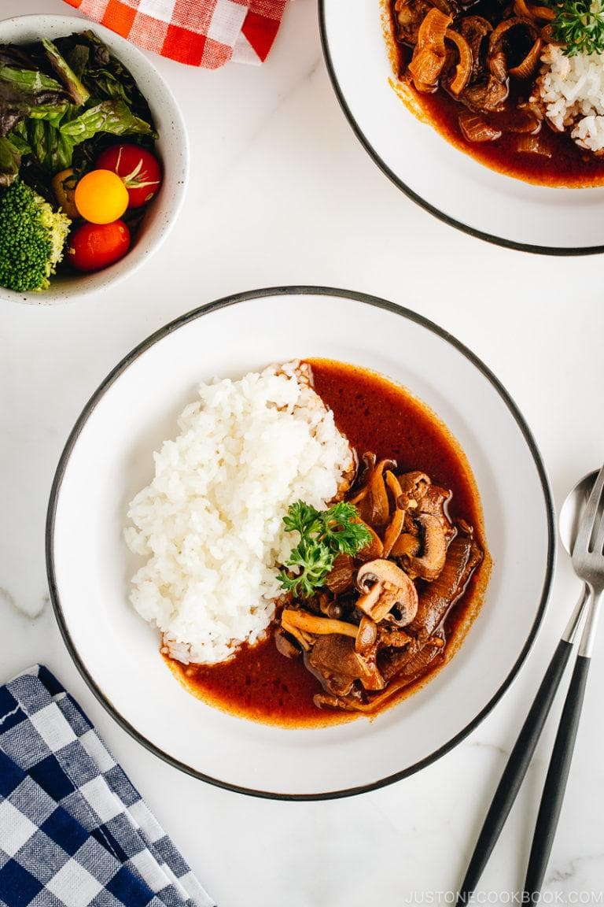

Hayashi Rice Recipe
Home

Description
Hayashi Rice, or hashed beef, is a rich Western-style stew of thin-sliced beef and mushrooms in a velvety
demi-glace sauce. Served with steamed rice, this uniquely Japanese creation is a home-cooking staple and popular
comfort food for all ages!
One of my son’s favorite Japanese food is hayashi rice (ハヤシライス). He has such passion for the stew that he can
talk about how much he loves the tender beef and the delicious demi-glace sauce in great animation. It can be
entertaining to watch a kid talk about food sometimes. There is so much excitement, and it warms my heart
knowing that all the hours spent in the kitchen is greatly appreciated. I digress a little, but let’s get back
to hayashi rice, a family staple and a comfort dish for all ages in Japan.
Ingredients
For the Beef
- 1 lb thinly sliced beef (such as ribeye) (you can thinly slice your own meat)
- 2 Tbsp red wine
- ¼ tsp Diamond Crystal kosher salt
- freshly ground black pepper
For the Vegetables
- 1½ onions
- 3.5 oz shimeji (brown beech) mushrooms (1 package)
- 4 button mushrooms
- 1 Tbsp olive oil
- 1 Tbsp unsalted butter
- ⅛ tsp Diamond Crystal kosher salt
For the Sauce
- 3 cups Homemade Demi-Glace Sauce (prepared in advance using my recipe)
- 2 cloves garlic
- 1 Tbsp tomato paste
- ½ cup red wine
- 4 Tbsp Worcestershire sauce (I use Japanese Bull-Dog brand; for other brands that are more tangy, increase
the brown sugar to 1 Tbsp from 2 tsp)
- 1 Tbsp soy sauce
- 3 Tbsp ketchup
- 2 tsp brown sugar
- 1¼ cups tomato juice (2 cans, 163 ml each)
- 1 bay leaf
- Diamond Crystal kosher salt (to taste)
Cooking Instructions
- Gather all the ingredients. Prepare the demi-glace ahead of time using my recipe
- Place 1 lb thinly sliced beef (such as ribeye) in a bowl and season with 2 Tbsp red wine, ¼ tsp Diamond
Crystal kosher salt, and freshly ground black pepper. Set aside.
- Heat 1 Tbsp olive oil in a Dutch oven over medium heat. When it‘s hot, add the beef.
- Sauté until no longer pink. Then, transfer the beef to a bowl.
- Melt 1 Tbsp unsalted butter in the same pot.
- Add the onion and ⅛ tsp Diamond Crystal kosher salt. Sauté until coated well with oil.
- Crush or mince 2 cloves garlic and add to the pot. Sauté until tender.
- Add 1 Tbsp tomato paste and ½ cup red wine.
- Add 4 Tbsp Worcestershire sauce and 1 Tbsp soy sauce.
- Add 3 Tbsp ketchup and 2 tsp brown sugar.
- Add 1¼ cups tomato juice and 3 cups Homemade Demi-Glace Sauce.
- Add 1 bay leaf. Then, add the beef back into the pot.
- Add the mushrooms.
- Cover and bring it to a boil.
- Skim the foam and scum using a fine-mesh skimmer. Cover, lower the heat, and simmer for 15 minutes.
- Open the lid and taste the Hayashi Rice. If necessary, season with Diamond Crystal kosher salt.